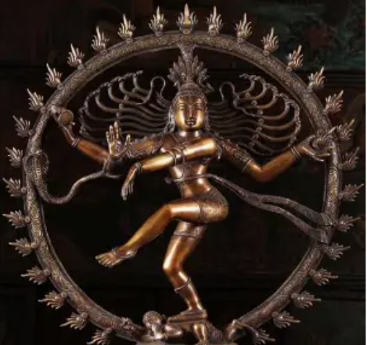

About Shaankari
Preserving the legacy of Kuchipudi since 2007.
Shaankari Kuchipudi Dance and Music Academy is dedicated to preserving, nurturing and promoting the rich heritage of Indian classical arts, with a special focus on the traditional Kuchipudi dance form.
Founded in 2007 by Guru Smt. Narapuraju Sreelatha and formally registered in 2008, the academy inspires students through authentic training rooted in tradition, culture and artistic excellence.
- 2007Founded
- 100+Students trained
- 7Arangetrams
- 5Original productions

Our vision
To pass on the timeless beauty of Kuchipudi to future generations, while instilling discipline, devotion, creativity and respect for Indian culture.

What makes Shaankari unique
- Authentic Kuchipudi training
- A holistic approach to learning
- A strong foundation in theory and practice
- Original dance productions
- National and international performance opportunities
- A focus on discipline and character building
Beyond dance
Students learn much more than dance movements.
- Sanskrit slokas
- Mythological stories
- Abhinaya (expression)
- Traditional compositions
- The cultural and spiritual significance of dance
Recognition
- Excellent academic results
- Doordarshan graded artists
Prestigious performance venues
- Chidambaram
- Arunachalam
- Tirupati Naadaneerajanam
- Yadagirigutta
- Srisailam
- Bhadrachalam
Our core values
-
Sincerity
Commitment to learning and self-improvement.
-
Regularity
Consistent practice to achieve excellence.
-
Punctuality
Respect for time, discipline and responsibility.
The Guru's philosophy
“Artists and Scientists are never satisfied.”
Learning is a lifelong journey. Every achievement is a stepping stone toward greater knowledge, deeper understanding and continued growth.
Our journey continues
With a strong foundation in tradition and a passion for excellence, Shaankari continues nurturing talented dancers, creating meaningful artistic experiences and preserving the timeless legacy of Kuchipudi for generations to come.